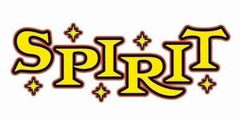

Trade Mark Journal No.2025/037 12 September 2025
WO0000001858230 (35)
Office of origin: United States of America

The mark consists of the word "SPIRIT" in yellow block letters, with each letter at a different height, with five yellow starburst designs placed strategically around specific letters, one star appears below the S, one above the P, one below the I, one above the R and the final below the T, all with black and red outlines.
The mark contains the colours yellow, black and red.
The mark consists of the word "SPIRIT" in yellow block letters, with each letter at a different height, with five yellow starburst designs placed strategically around specific letters, one star appears below the S, one above the P, one below the I, one above the R and the final below the T, all with black and red outlines.
- Class 35
- Retail store services, pop-up retail store services and online retail store services connected with the sale of halloween merchandise namely costumes, theatrical costumes, Halloween costumes, masquerade costumes, fancy dress costumes, costumes for use in role-playing games, costumes for use in children’s dress up play, festive decorations, party novelties, toys, plush toys, games, playthings, puzzles, puppets, masks, electronic games, pet costumes, pet costume accessories, artificial flowers and plants, plants, inflatable decorations, animatronics, clothing, footwear, headgear, bags, headbands, cosmetics, lighting, candles, electric candles, confectionery, beer, cocktails, cocktail making kits, food and beverages, printed matter, printed publications, books, calendars, stickers, stationery, pens, writing implements, pictures, posters, photo frames, picture frames, stickers, greetings cards, gift wrapping, gift boxes, gift bags, paper plates, serviettes, illuminated signs, electronic signs, non-luminous metal signs, neon signs, kitchen and household utensils and containers, drinking cups, water bottles, cooking implements, beer dispensers, drink dispensers, cups, mugs, plates, saucers bowels, trays, glassware, porcelainware, cushions, pillows, throws, blankets, bed linen, bath linen, table linen, towels, oven gloves, tea towels, drinks coasters, keyrings, badges, statuettes, works of art and decorations, including sculptures, made primarily of wood, straw, bone, shell, wax, resin, plastics or plaster, or of substitutes for these, works of art and decorations, including sculptures, made primarily of ceramics or glass, or of substitutes for these, sculptures of non-precious metal, festive decorations and party novelties.
Spencer Gifts LLC
Representative: Keltie LLP, No.1 London Bridge London SE1 9BA UNITED KINGDOM